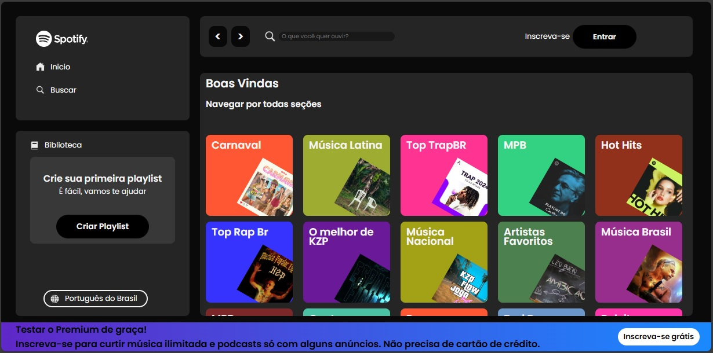

Jonas Ursolino Lima
Desenvolvedor Web | HTML, CSS & Js| Cursando Inglês e Dev Web pela IFRS.
Apaixonado por tecnologia, criando interfaces com inovação e criatividade.
PROJETOS PESSOAIS

Apaixonado por tecnologia, criando interfaces com inovação e criatividade.